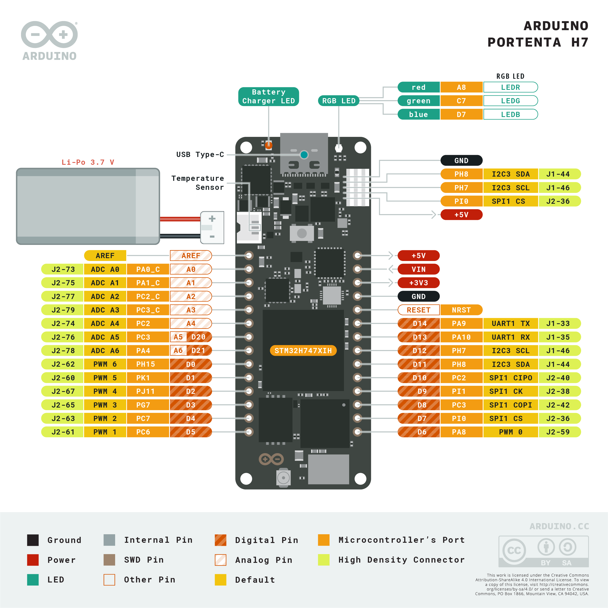

Arduino Portenta H7¶
Arduino Portenta H7 は、STMicroelectronics STM32H747XI を中心に構築された 66 × 25 mm の産業用開発ボードです。これは 400 MHz の Cortex‑M7 と 200 MHz の Cortex‑M4 を組み合わせたデュアルコア SoC です。OpenMV ファームウェアは完全に M7 コア上で動作し、ベースとなる Portenta H7 に Himax HM01B0 / HM0360 カメラ、デュアル PDM マイク、microSD スロットを追加する Portenta Vision Shield（Ethernet 版または LoRa 版）と組み合わせて使用するように設計されています。

完全なデータシート、写真、寸法については Arduino Portenta H7 製品ページ を参照してください。
主な特徴¶
STMicroelectronics STM32H747XI デュアル Cortex‑M7（400 MHz）+ Cortex‑M4（200 MHz）。OpenMV ファームウェアは M7 コアでのみ動作します。M4 コアはプロセッサ間通信のために openamp を通じて公開されています。
8 MB の外部 SDRAM に加えて 2 MB の内部フラッシュ と 16 MB の外部 QSPI フラッシュ。
ハードウェア JPEG エンコーダー／デコーダー。
Murata 1DX（CYW4343W）モジュールによる Wi‑Fi b/g/n（2.4 GHz）+ Bluetooth LE 5.1 — オンボードの U.FL コネクタを介して付属のアンテナに接続します。
高速 USB‑C（480 Mb/s）。
Arduino MKR スタイルの上面ヘッダーに 22 本のユーザー I/O ピン — D0–D14（デジタル）に加えて A0–A6（アナログ）。
底面の 2 つの 80 ピン高密度コネクタは、STM32H747 のフルファブリック — DCMI、DSI、Ethernet RMII、FDCAN、SDIO、SAI/I²S、UART、追加の SPI/I²C/タイマーなど — を公開します。Vision Shield のようなシールドはこれらのコネクタに接続します。
高度なデバッグ用に底面 HD コネクタに引き出された JTAG / SWD。
バッテリーサポート — 3.7 V Li‑Po JST コネクタに加えてオンボードの充電器とバッテリーモニター。
ピン配置¶
{kind=link}

ピンリファレンス¶
Arduino MKR スタイルの上端ヘッダーに 22 本のユーザーピンが公開されています — 15 本のデジタル（D0-D14）に加えて 7 本のアナログ（A0-A6）。シールド作業用には、底面の 80 ピン高密度コネクタを通じてさらに多くの SoC ピンが利用可能です。そのマッピングについては Arduino の 完全なピン配置 PDF を参照してください。
ピン名 |
リファレンス |
機能 |
|---|---|---|
D0 |
3.3 V |
TIM8 CH3N |
D1 |
3.3 V |
TIM1 CH1 / SPI5 NSS |
D2 |
3.3 V |
TIM1 CH2 / SPI5 MISO |
D3 |
3.3 V |
GPIO |
D4 |
3.3 V |
TIM3 CH2 / TIM8 CH2 / USART6 RX |
D5 |
3.3 V |
TIM3 CH1 / TIM8 CH1 / USART6 TX |
D6 |
3.3 V |
TIM1 CH1 / I2C3 SCL |
D7 |
3.3 V |
TIM5 CH4 / SPI2 NSS |
D8 |
3.3 V |
SPI2 MOSI（A3 / A5 と共有） |
D9 |
3.3 V |
SPI2 SCK |
D10 |
3.3 V |
SPI2 MISO（A2 / A4 と共有） |
D11 |
3.3 V |
I2C3 SDA |
D12 |
3.3 V |
I2C3 SCL |
D13 |
3.3 V |
USART1 RX / TIM1 CH3 |
D14 |
3.3 V |
USART1 TX / TIM1 CH2 |
A0 |
3.3 V |
ADC12 IN0（アナログ専用） |
A1 |
3.3 V |
ADC12 IN1（アナログ専用） |
A2 |
3.3 V |
ADC123 IN12（アナログ専用; D10 と共有） |
A3 |
3.3 V |
ADC12 IN13（アナログ専用; D8 と共有） |
A4 |
3.3 V |
ADC123 IN12（D10 と共有） |
A5 |
3.3 V |
ADC12 IN13（D8 と共有） |
A6 |
3.3 V |
DAC1 OUT1 / ADC12 IN18 |
A7 |
3.3 V |
TIM3 CH1 / ADC12 IN3（ヘッダーには公開されていません） |
D20 |
3.3 V |
|
D21 |
3.3 V |
|
RESET |
3.3 V |
オンボードスイッチを押すか GND にプルダウンしてリセットします |
LED_RED |
3.3 V |
RGB LED の赤チャンネル（アクティブロー） |
LED_GREEN |
3.3 V |
RGB LED の緑チャンネル（アクティブロー） |
LED_BLUE |
3.3 V |
RGB LED の青チャンネル（アクティブロー） |
注釈
A0-A3 は STM32H747 上の アナログ専用パッドで、GPIO 機能はありません — ADC 入力としてのみ扱ってください。A2/A4 と A3/A5 はそれぞれ D10 と D8 と物理ピンを共有しているため、アナログとして読み取っている間はそれらで PWM や SPI を駆動できません。A7 は底面 HD コネクタにあります。
電源ピン¶
MKR ヘッダーピン:
VIN — オンボード PMIC へのメインシステムレール。
+5Vレール、MKRVINピン、または底面の 80 ピン HD コネクタからダイオードを介して供給されます。+5V — USB、ESLOV コネクタ、または MKR
+5Vピン自体から供給される 5 V レール。+3V3 — メイン 3.3 V レール（PMIC スイッチングレギュレータ出力）。
AREF — ADC ピン用のアナログ電圧リファレンス。デフォルトは 3.3 V です。別のリファレンスを使用するには外部から駆動してください。
GND — 共通グラウンド。
バッテリー入力:
ボード前面の Li‑Po JST は 3.7 V Li‑Po セルを受け付けます。
+5VまたはVINが存在する場合、PMIC がそれを充電します。
Portenta H7 は次のいずれかの経路を通じて給電できます:
USB‑C — オンボード PMIC に 5 V を供給します。
ESLOV コネクタ —
VESLOVに最大 5 V（ESLOV コネクタ を参照）。VIN ピン — 安定化された 5 V 電源を直接駆動します。
Li‑Po バッテリー — 前面の JST に接続します。
ESLOV コネクタ¶
ボードの側面には 5 ピンのはんだ付け不要な ESLOV コネクタがあります:
ピン |
名前 |
機能 |
|---|---|---|
1 |
VESLOV |
5 V 電源出力（MKR ヘッダーの |
2 |
INT |
|
3 |
SCL_EXT |
MKR ヘッダーの |
4 |
SDA_EXT |
MKR ヘッダーの |
5 |
GND |
共通グラウンド |
ESLOV の SCL_EXT/SDA_EXT と MKR ヘッダーの D12/D11 は同じピンです — 1 つの I²C 3 バスが 2 つのコネクタに公開されています。
Tip
特定のアクティブ／ディープスリープのデューティサイクルで Portenta H7 がバッテリーでどれだけ長く動作するかをモデル化するには、バッテリー寿命推定ツール を使用してください。
リカバリーおよびデバッグピン¶
RESET — 上面ヘッダーに公開されたピンと、ボード側面のモーメンタリスイッチの両方があり、SoC の NRST ラインに接続されています。GND にプルするかボタンを押してリセットします。
Portenta H7 は Arduino のブートローダーに入るために Arduino 標準の ダブルタップリセットを使用します。リセットボタンを素早く 2 回押すと、ボードが USB 経由で DFU デバイスとして再列挙され、OpenMV IDE が新しいファームウェアイメージをフラッシュできます。
STM32 SWD 信号は底面の HD コネクタ J1 に公開されています:
J1‑73— NRSTJ1‑75— SWDIO（PA13）J1‑77— SWCLK（PA14）J1‑79— SWO（PB3）
Portenta Breakout、公式の Arduino デバッグアダプター、または 1.27 mm ヘッダー付きのカスタムキャリアを介して配線します。すべてのデバッグ信号は 3.3 V 基準です。
注釈
Portenta Vision Shield が取り付けられている場合、同じ SWD/JTAG 信号がシールド上の標準の 20 ピン ARM Cortex Debug JTAG ヘッダー（1.27 mm / 0.05″ ピッチ）まで配線されます。
オンボードペリフェラル¶
LED¶
Portenta H7 には machine.LED を通じてソフトウェアで制御可能な 1 つのユーザー RGB LED があります:
from machine import LED
LED("LED_RED").on()
LED("LED_GREEN").on()
LED("LED_BLUE").on()
バッテリー JST の隣にある別のオレンジ色の 充電 LED は、オンボード充電器が接続された Li‑Po に電流を供給しているときに点灯します。これはユーザーが制御することはできません。
カメラセンサー（Vision Shield）¶
Portenta Vision Shield（Ethernet 版または LoRa 版）が取り付けられている場合、Himax センサーは csi --- カメラセンサー モジュールを通じて駆動されます:
import csi
cam = csi.CSI()
cam.reset()
cam.pixformat(csi.GRAYSCALE)
cam.framesize(csi.QVGA)
cam.snapshot(time=2000) # let auto‑exposure settle
while True:
img = cam.snapshot()
2 つの Vision Shield リビジョンがサポートされています:
HM01B0 — 320 × 320 モノクロ。
HM0360 — 640 × 480 モノクロ。
警告
Vision Shield カメラが初期化されている間、次の MKR ヘッダーピンはファームウェアによって占有され、使用できません:
MKR ピン |
理由 |
|---|---|
|
TIM1 CH1 — カメラマスタークロック |
|
TIM1 CH1（代替）— カメラマスタークロック |
|
I²C 3 SDA — カメラと共有; バスは使用可能ですがセンサーの I²C アドレス（ |
|
I²C 3 SCL — カメラと共有; バスは使用可能ですがセンサーの I²C アドレス（ |
|
DCMI HSYNC — DAC も無効になります |
|
DCMI PXCLK |
機械学習¶
ml --- 機械学習 は CMSIS‑NN カーネルを使用して Cortex‑M7 上で量子化された TFLite モデルを実行します — 数フレーム毎秒でコンパクトな検出器を動かすのに十分な速さです。読み取り専用の /rom ファイルシステム上のモデルは、RAM にコピーせずにフラッシュから直接ロードされます。以下は、Vision Shield カメラからの各フレームに検出された顔とその 6 つのランドマークをオーバーレイする 128×128 の BlazeFace 検出器です:
import csi
import time
import ml
from ml.postprocessing.mediapipe import BlazeFace
# Initialize the sensor.
csi0 = csi.CSI()
csi0.reset()
csi0.pixformat(csi.GRAYSCALE)
csi0.framesize(csi.QVGA)
csi0.window((240, 240))
# Load built-in face detection model
model = ml.Model("/rom/blazeface_front_128.tflite", postprocess=BlazeFace(threshold=0.4))
print(model)
clock = time.clock()
while True:
clock.tick()
img = csi0.snapshot()
# faces is a list of ((x, y, w, h), score, keypoints) tuples
for r, score, keypoints in model.predict([img]):
ml.utils.draw_predictions(img, [r], ("face",), ((0, 0, 255),), format=None)
# keypoints is a ndarray of shape (6, 2)
ml.utils.draw_keypoints(img, keypoints, color=(255, 0, 0))
print(clock.fps(), "fps")
M4 コア¶
Cortex‑M4 コアはプロセッサ間通信のために openamp を通じて公開されています。OpenMV ファームウェアは M7 でのみ動作します。M4 には独自の MicroPython ランタイムがないため、M4 を使用するには別の C ファームウェアイメージをビルドし、openamp.RemoteProc を介してファイルシステムからロードする必要があります。仮想 UART エンドポイントを実装するビルド済みのサンプルファームウェアが openamp_vuart リポジトリで入手できます — その README に従って vuart.elf をビルドしてください:
import openamp
import time
def ept_recv_callback(src_addr, data):
print("Received:", data.decode())
ept = openamp.Endpoint("vuart-channel", callback=ept_recv_callback)
rproc = openamp.RemoteProc("vuart.elf")
rproc.start()
count = 0
while True:
if ept.is_ready():
ept.send("Hello World %d!" % count, timeout=1000)
count += 1
time.sleep_ms(1000)
実際には、このサポートは動作するデュアルコアプラットフォームというよりも、openamp インターフェースのデモンストレーションとして扱うのが最適です — M4 は M7 から独立してリセットできないため、M4 を停止するとシステム全体の再起動が強制されます。
マイク（Vision Shield）¶
Vision Shield は デュアル PDM マイクを搭載しており、STM32 の SAI4 ペリフェラルを介して audio --- オーディオモジュール でキャプチャされます。各バッファは符号付き 16 ビット PCM の bytearray として届き、DSP のために ulab/numpy に渡す準備が整っています — 例えば、シンプルな音量検出器です:
import audio
from ulab import numpy as np
def loudness(pcmbuf):
samples = np.array(np.frombuffer(pcmbuf, dtype=np.int16), dtype=np.float)
rms = np.sqrt(np.mean(samples ** 2))
if rms > 10000:
print("Loud!", int(rms))
audio.init(channels=1, frequency=16000, gain_db=24)
audio.start_streaming(loudness)
while True:
pass
両方のマイクからインターリーブされたサンプルを受け取るには、audio.init に channels=2 を渡してください。
バッテリー残量ゲージ¶
Maxim MAX17262 ModelGauge m5 残量ゲージは、Li‑Po バッテリーの電圧、電流、温度、充電状態を追跡します。これは I²C 1 のアドレス 0x36 にあります。
MAX17262 は 内部電流センシングを備えているため、電流レジスタは外部の Rsense 係数を適用することなくマイクロアンペア単位で直接読み出されます。残量ゲージの読み取りは無害です — 同梱のドライバはありませんが、MAX17262 データシート に記載されているレジスタを直接読み取ることができます:
import time
import struct
from machine import I2C
FUEL_GAUGE = 0x36 # MAX17262
def read_reg(bus, addr, reg):
return struct.unpack("<H", bus.readfrom_mem(addr, reg, 2))[0]
def read_signed(bus, addr, reg):
v = read_reg(bus, addr, reg)
return v - 0x10000 if v & 0x8000 else v
bus = I2C(1)
while True:
# 0x05 RepCap — remaining capacity, raw × 0.5 mAh
rep_cap = read_reg(bus, FUEL_GAUGE, 0x05) * 0.5
# 0x06 RepSOC — state of charge, raw / 256 %
soc = read_reg(bus, FUEL_GAUGE, 0x06) / 256
# 0x08 Temp — die temperature, signed, raw / 256 °C
temp = read_signed(bus, FUEL_GAUGE, 0x08) / 256
# 0x09 VCell — battery voltage, raw × 78.125 µV
vcell = read_reg(bus, FUEL_GAUGE, 0x09) * 78.125 / 1_000_000
# 0x0A Current — signed, raw × 156.25 µA
current = read_signed(bus, FUEL_GAUGE, 0x0A) * 156.25 / 1000
# 0x0B AvgCurrent — averaged current
avg_curr = read_signed(bus, FUEL_GAUGE, 0x0B) * 156.25 / 1000
# 0x10 FullCapRep — learned full capacity, raw × 0.5 mAh
full_cap = read_reg(bus, FUEL_GAUGE, 0x10) * 0.5
# 0x11 TTE — time-to-empty (valid while discharging), raw × 5.625 s
tte_s = read_reg(bus, FUEL_GAUGE, 0x11) * 5.625
# 0x20 TTF — time-to-full (valid while charging), raw × 5.625 s
ttf_s = read_reg(bus, FUEL_GAUGE, 0x20) * 5.625
# 0x17 Cycles — charge-cycle counter, 1% per LSB
cycles = read_reg(bus, FUEL_GAUGE, 0x17) / 100
print("V: %.3f V" % vcell)
print("Capacity: %.1f / %.1f mAh (%.1f %%)" % (rep_cap, full_cap, soc))
print("Temp: %.1f C" % temp)
print("Current: %.1f mA (avg %.1f mA)" % (current, avg_curr))
print("TTE: %.0f s TTF: %.0f s" % (tte_s, ttf_s))
print("Cycles: %.2f" % cycles)
print()
time.sleep_ms(1000)
Current は符号付き 2 の補数です: 充電中は正、放電中は負になります。TTE は電流が負のときのみ意味を持ち、TTF は電流が正のときのみ意味を持ちます。
電源管理 IC¶
NXP PF1550 PMIC は、Portenta H7 上のすべてのレギュレータ — +3V3 メインレール、+1V8 SoC コア／I/O レール、Li‑Po 充電器 — を制御します。これは I²C 1 のアドレス 0x08 にあります。
警告
PMIC レジスタの読み取りは問題ありませんが、書き込みは危険です。 バックレギュレータや充電器の設定を誤って構成すると、ボード、バッテリー、またはその両方を永久に損傷する可能性があります。何をしているか正確に分かっている場合を除き、PMIC は読み取り専用として扱ってください。
残量ゲージでは分からず PMIC が教えてくれる最も有用なことは、充電器のステートマシンです — ボードが現在 USB / ESLOV / VIN のいずれで動作しているか、Li‑Po が充電サイクルのどの段階にあるか、充電器が熱またはウォッチドッグの障害状態にあるかどうかです。充電器レジスタは PF1550 のメイン I²C アドレス空間内でオフセット 0x80 に配置されています（PF1550 データシート の §22.2 を参照）。したがって、例えば充電器アドレス 0x04 の CHG_INT_OK は PMIC レジスタ 0x84 から読み取られます:
import time
from machine import I2C
PMIC = 0x08
# Charger state machine (low nibble of CHG_SNS, register 0x87)
CHG_STATES = {
0x0: "precharge",
0x1: "fast charge (constant current)",
0x2: "fast charge (constant voltage)",
0x3: "end of charge",
0x4: "done",
0x6: "timer fault",
0x7: "thermistor suspend",
0x8: "off — input invalid or charger disabled",
0x9: "battery overvoltage",
0xA: "thermal shutdown",
0xC: "linear mode (not charging)",
}
bus = I2C(1)
while True:
# 0x84 CHG_INT_OK — single-bit indicators
ok = bus.readfrom_mem(PMIC, 0x84, 1)[0]
vbus_ok = bool(ok & (1 << 5)) # bit 5 — VBUS valid (USB/VIN)
bat_ok = bool(ok & (1 << 2)) # bit 2 — battery OK
chg_ok = bool(ok & (1 << 3)) # bit 3 — charger actively charging
thm_ok = bool(ok & (1 << 7)) # bit 7 — thermistor in normal range
# 0x87 CHG_SNS — charger state + thermal regulation flag
chg_sns = bus.readfrom_mem(PMIC, 0x87, 1)[0]
state = CHG_STATES.get(chg_sns & 0x0F, "reserved")
treg = bool(chg_sns & (1 << 7)) # thermal regulation active
print("VBUS valid: ", vbus_ok)
print("battery OK: ", bat_ok)
print("charger active: ", chg_ok)
print("thermistor normal: ", thm_ok)
print("thermal reg active: ", treg)
print("state: ", state)
print()
time.sleep_ms(1000)
データシートで確認する価値のあるその他の読み取り専用レジスタ（すべて充電器オフセット 0x80）: 0x80 CHG_INT（ラッチされた充電器割り込み — 障害フラグ）、0x86 VBUS_SNS（OVLO / UVLO / DPM を含むマルチビット VBUS 状態）、0x88 BATT_SNS（バッテリーの存在と過電流状態）。
Wi‑Fi¶
オンボードの Murata 1DX（CYW4343W）は、ステーションインターフェースとして network --- ネットワーク構成 を介して公開されています。無線をオンにする前に、付属のアンテナをオンボードの U.FL コネクタに接続してください:
import network, time
wlan = network.WLAN(network.STA_IF)
wlan.active(True)
wlan.connect("ssid", "password")
while not wlan.isconnected():
time.sleep(1)
print("Wi‑Fi IP:", wlan.ipconfig("addr4")[0])
Bluetooth¶
同じ Murata 1DX は Bluetooth LE 5.1 も公開しています。asyncio に対応した BLE には aioble --- 非同期 BLE を使用してください — 例えば、ペリフェラルとしてアドバタイズし、セントラルの接続を待ちます:
import asyncio
import aioble
async def run():
while True:
conn = await aioble.advertise(250_000, name="Portenta-H7")
print("Connected:", conn.device)
await conn.disconnected()
asyncio.run(run())
LoRa（Vision Shield）¶
Vision Shield の LoRa 版は、UART 経由で Portenta H7 に配線された Murata CMWX1ZZABZ LoRaWAN モジュールを追加します。lora モジュールは AT コマンドファームウェアをラップし、OTAA または ABP join、アップリンク、ダウンリンクをサポートします:
from lora import Lora
from lora import BAND_EU868
from lora import LoraErrorTimeout
lora = Lora(band=BAND_EU868, poll_ms=60000)
print("Device EUI:", lora.get_device_eui())
appEui = "1234567890123456"
appKey = "12345678901234567890123456789012"
try:
lora.join_OTAA(appEui, appKey)
except LoraErrorTimeout as e:
print("Join timed out — try moving near a window:", e)
lora.set_port(3)
lora.send_data("HeLoRA world!", True)
while True:
if lora.available():
data = lora.receive_data()
if data:
print("Port:", data["port"], "Data:", data["data"])
lora.poll()
EU 以外の地域では BAND_US915 / BAND_AS923 / BAND_AU915 などを使用し、ネットワークサーバーが ABP アクティベーションを使用する場合は lora.Lora.join_ABP() に切り替えてください。
警告
LoRa モジュールの使用中、ドライバは Murata CMWX1ZZABZ の制御ラインとして次の MKR ヘッダーピンを占有します — これらは 使用できません:
MKR ピン |
理由 |
|---|---|
|
LoRa モジュールの BOOT ピン |
|
LoRa モジュールの RST ピン |
Ethernet（Vision Shield）¶
Vision Shield の Ethernet 版は、STM32H747 の 10/100 Ethernet MAC に RMII 経由で配線された磁気部品付きの RJ45 ジャックを追加します。Ethernet ケーブルを差し込むと PHY が LAN インターフェースとして表示されます。リンクが確立すると DHCP が自動的に実行されます:
import network
import time
lan = network.LAN()
lan.active(True)
while not lan.isconnected():
time.sleep(1)
print("Ethernet IP:", lan.ipconfig("addr4")[0])
microSD カード（Vision Shield）¶
カードが挿入されると、/sdcard に自動的にマウントされ、通常のファイルシステムを通じて使用できます:
import os
for entry in os.listdir("/sdcard"):
print(entry)
バスリファレンス¶
GPIO¶
シルク印刷されたピンのいずれかを読み取りまたは駆動するには machine.Pin を使用します。出力は 3.3 V CMOS で、ピンあたり最大 20 mA をシンク／ソースできます（ヘッダー全体で合計 140 mA）。
from machine import Pin
out = Pin("D0", Pin.OUT)
out.on()
out.off()
out.value(1)
inp = Pin("D1", Pin.IN, Pin.PULL_UP)
print(inp.value())
任意の入力ピンはエッジ遷移で割り込みを発生させることもできます:
def handler(pin):
print("triggered:", pin)
Pin("D1", Pin.IN, Pin.PULL_UP).irq(
handler, Pin.IRQ_FALLING | Pin.IRQ_RISING,
)
UART¶
バス |
TX |
RX |
|---|---|---|
UART1 |
D14 |
D13 |
UART6 |
D5 |
D4 |
from machine import UART
uart = UART(1, baudrate=115200)
uart.write("hello")
uart.read(5)
I²C¶
バス |
SCL |
SDA |
|---|---|---|
I2C3 |
D12 |
D11 |
from machine import I2C
i2c = I2C(3, freq=400_000)
i2c.scan()
i2c.writeto(0x76, b"hi")
MKR ヘッダーの D11/D12 パッドと ESLOV コネクタの SDA_EXT/SCL_EXT ピンは、同じ I²C 3 バスに接続されています — ESLOV のピン配置については上記の ESLOV コネクタ を参照してください。
同じハードウェアは、machine.I2CTarget を通じてターゲット（スレーブ）モードでも使用でき、別の I²C コントローラにメモリ領域を公開できます:
from machine import I2CTarget
buf = bytearray(32)
target = I2CTarget(3, addr=0x42, mem=buf)
SPI¶
バス |
MOSI |
MISO |
SCK |
CS |
|---|---|---|---|---|
SPI2 |
D8 |
D10 |
D9 |
D7 |
from machine import SPI
from machine import Pin
spi = SPI(2, baudrate=10_000_000)
cs = Pin("D7", Pin.OUT, value=1) # CS is not driven by the SPI peripheral
cs.value(0)
spi.write(b"hello")
cs.value(1)
ADC¶
Portenta H7 は A0–A7 に 8 つの 12 ビット ADC チャンネルを公開しています。すべて 3.3 V 基準です — read_u16 はピンの 0–3.3 V に対して 0–65535 を返します:
from machine import ADC
import time
adc = ADC("A0")
while True:
voltage = adc.read_u16() * 3.3 / 65535
print(voltage)
time.sleep_ms(100)
DAC¶
1 つの 12 ビット DAC チャンネルが pyb.DAC を通じて DAC1（A6 / D21）に公開されています:
from pyb import DAC
dac = DAC("DAC1")
dac.write(int(0.5 * 255)) # 8‑bit output, ~1.65 V
PWM¶
ピン |
タイマー / チャンネル |
|---|---|
D0 |
TIM8 CH3N |
D1 |
TIM1 CH1, TIM8 CH3N |
D2 |
TIM1 CH2, TIM8 CH2N |
D4 |
TIM3 CH2, TIM8 CH2 |
D5 |
TIM3 CH1, TIM8 CH1 |
D6 |
TIM1 CH1 |
D7 |
TIM5 CH4 |
D13 |
TIM1 CH3 |
D14 |
TIM1 CH2 |
A7 |
TIM3 CH1 |
machine.PWM を介してそれらのいずれかを駆動します:
from machine import Pin, PWM
pwm = PWM(Pin("D4"), freq=1_000, duty_u16=32768)
注釈
複数のピンがタイマーチャンネルを共有しています:
TIM1 CH1 は
D1とD6にあります。TIM1 CH2 は
D2とD14にあります。TIM8 CH3N は
D0とD1にあります。
タイマーチャンネルごとに 1 つのコンシューマーを選択してください。
警告
TIM1 は、Vision Shield が csi --- カメラセンサー を通じて初期化されるとき、カメラマスタークロック用に予約されます — カメラがアクティブな間、D1、D2、D6、D13、D14 は PWM で駆動できません。
ソフトウェアビットバンギングバス¶
追加のバスが必要な場合、machine.SoftI2C と machine.SoftSPI は任意の GPIO で動作します。
サーマルセンサー（オフボード）¶
ファームウェアには、外部配線されたサーマルイメージャー用の fir --- 熱センサードライバー（fir == 遠赤外線） ドライバが含まれています:
MLX90621 — 16 × 4 IR アレイ
MLX90640 — 32 × 24 IR アレイ
MLX90641 — 16 × 12 IR アレイ
AMG8833 — 8 × 8 IR アレイ
モジュールをボードの I²C バスに配線し、fir.init() + fir.snapshot() でフレームを読み取ります:
import time
import image
import fir
fir.init() # auto‑detects the sensor
clock = time.clock()
while True:
clock.tick()
try:
img = fir.snapshot(x_scale=5, y_scale=5,
color_palette=image.PALETTE_IRONBOW,
hint=image.BICUBIC,
copy_to_fb=True)
except OSError:
continue
print(clock.fps())
fir ドライバは I²C 3 経由でのみセンサーと通信します — モジュールを D12（SCL）と D11（SDA）に配線してください。
タイミング¶
time¶
time モジュールは、ブロッキング遅延、モノトニックティック、経過時間の測定をカバーします:
import time
time.sleep(1) # seconds
time.sleep_ms(500)
time.sleep_us(10)
start = time.ticks_ms()
# ...do work...
elapsed = time.ticks_diff(time.ticks_ms(), start)
仮想タイマー¶
machine.Timer は、ハードウェアタイマースロットを消費せずに周期的または単発のコールバックをスケジュールします。仮想（ソフトウェア）タイマーを使用するには、id として -1 を渡してください:
from machine import Timer
one_shot = Timer(-1)
one_shot.init(period=5_000, mode=Timer.ONE_SHOT,
callback=lambda t: print("once"))
periodic = Timer(-1)
periodic.init(period=2_000, mode=Timer.PERIODIC,
callback=lambda t: print("tick"))
周期値はミリ秒単位です。スロットを停止して解放するには deinit() を呼び出してください。
リアルタイムクロック¶
machine.RTC はリセットをまたいで実時間を保持します。HD コネクタは、電源喪失時に CR2032 から RTC をバックアップできる COINCELL パッドも公開しています:
from machine import RTC
rtc = RTC()
rtc.datetime((2026, 4, 30, 4, 12, 0, 0, 0)) # Y, M, D, weekday, h, m, s, subsec
print(rtc.datetime())
ウォッチドッグ¶
machine.WDT は、アプリケーションがハングした場合にボードをリセットします。一度開始すると停止や再構成はできません — メインループ内で定期的にフィードしてください:
from machine import WDT
wdt = WDT(timeout=5_000) # 5 second window
while True:
# ...do work...
wdt.feed()
ブートおよびランタイム情報¶
ファームウェア更新（DFU）¶
Portenta H7 は Arduino のブートローダーに入るために Arduino 標準の ダブルタップリセットを使用します。リセットボタンを素早く 2 回押すと、ボードが USB 経由で DFU デバイスとして再列挙され、OpenMV IDE が新しいファームウェアイメージをフラッシュできます。
実行中のスクリプトは、machine.bootloader() を呼び出すことで、オンデマンドでブートローダーに再び入ることができます:
import machine
machine.bootloader()
ファイルシステムとブート順序¶
Portenta H7 ファームウェアは、ブート時に最大 3 つのファイルシステムをマウントします:
内部フラッシュ — 常に
/flashにマウントされます。デフォルトでmain.pyとREADME.txtを保持します。初回のブート時に作成されます。microSD カード — Vision Shield が取り付けられていてカードが挿入されている場合、
/sdcardにマウントされます。ROMFS — 読み取り専用のメモリマップトファイルシステムで、起動時に MicroPython によって
/romに自動的にマウントされます。
マウント後、カードが存在する場合は作業ディレクトリが /sdcard に設定され、それ以外の場合は /flash に設定されます。その後、インタープリタはそのディレクトリからスクリプトを実行します:
boot.pyは すべてのソフトリセット時（コールドブート、REPL からのCtrl‑D、または実行中のスクリプトが戻ったとき）に実行されます。main.pyは コールドブート時のみ、boot.pyの直後に実行されます。その後のソフトリセットではboot.pyが再実行されますが、そのまま REPL に移行します —main.pyを再実行するには、ボードを完全にリセットする必要があります。
boot.py または main.py を SD カードに置くと、フラッシュ内のコピーには手を付けずにそれを上書きします — 両方のファイルはブートディレクトリ（カードがマウントされている場合は /sdcard、それ以外の場合は /flash）で検索されます。
新しくフラッシュされたボードに同梱されるデフォルトの main.py は、ハートビートとしてユーザー RGB LED の 青チャンネルを点滅させるだけです（2 回の短いパルス、短い間隔）。これにより、ホストを接続しなくてもファームウェアが正常にブートしたことを確認できます。
sys.path は 3 つすべてのファイルシステムとその lib/ サブディレクトリを含むように拡張されるため、インポート可能なモジュールは /flash/lib、/sdcard/lib、/rom/lib に配置できます。
挿入された SD カードをシステムに無視させる（例えば、カードが存在していてもフラッシュの main.py を実行する）には、/flash のルートに SKIPSD という名前の空のファイルを作成してください。
USB で接続されている場合、ブートファイルシステム（カードが存在する場合は /sdcard、それ以外の場合は /flash）も USB マスストレージドライブとしてホスト上に列挙され、boot.py、main.py、その他のファイルを直接編集できます。ボードをリセットする前にドライブを取り出して、ホストがキャッシュされた書き込みをフラッシュするようにしてください。
注釈
OS はドライブを受動的なブロックデバイスとして扱うため、カメラ上で実行されているコードによって作成または変更されたファイルは、ホストがドライブを再マウントするまで表示されません。OS とカメラが同じファイルシステムに同時に書き込むと、OS が優先され、カメラによる変更が上書きされます。スクリプトが書き戻すデータには SD カードを使用し、ホストからそれらのファイルを読み取る前に再マウントしてください。
注釈
ユーザー RGB LED の 赤チャンネルは、ホストが USB マスストレージドライブから読み取りまたは書き込みを行っている間、短時間点灯することがあります — これはファームウェア駆動のアクティビティインジケータであり、障害ではありません。
ストレージサイズ¶
Portenta H7 には次のものが同梱されています:
/flash— 11 MB の FAT ファイルシステム、読み書き可能。/rom— 4 MB の読み取り専用メモリマップト ROMFS で、ゼロコピー mmap アクセスの恩恵を受けるスクリプトや ML モデルを同梱するために使用されます。/sdcard— Vision Shield に挿入された microSD カードのフルサイズ（存在する場合）、読み書き可能。
ハードフォルトインジケータ¶
ユーザー RGB LED がすべての色を高速に循環している場合 — 個別の色相というよりも きらめく白色 LED のように見えるほど速い場合 — ファームウェアは回復不可能なハードフォルトに陥っています。回復するにはファームウェアを再フラッシュしてください。再フラッシュしても解決しない場合、ボードが物理的に損傷している可能性があります。
ソフトウェアライブラリ¶
モジュールの完全なリスト — Portenta H7 ビルドに固有のものを含む — については ライブラリインデックス を参照してください。